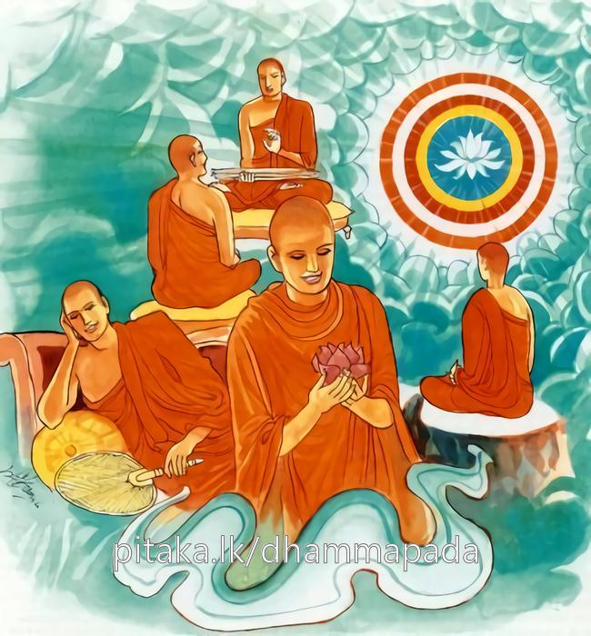

15-7 තිස්ස ස්ථවිරයන් වහන්සේ
මෙම කතාව ධම්මපද අටුවාවෙන් ද කියවන්න.
පවිවෙකරසං පීත්වා රසං උපසමස්ස ච
නිද්දරො හොති නිප්පාපො ධම්මපීතිරසං පිබං.
කායචිත්තවිවේකයෙන් උපන් (සුව සොම්නසැ යි කියන ලද) රසය ද, ක්ලේශව්යුපශම යැ යි කියන ලද නිවනේ රසය ද බී, (දුඃඛසත්යය පිරිසි ඳ දැනීම් ආදිය කෙරෙමින් නිවන අරමුණු වශයෙන් ප්රත්යක්ෂ කරමින් අනුභව කොට නවලෝකොත්තර ධර්ම වශයෙන් උපන් ප්රීතිරසය බොන්නාවු රහත් මහණ තෙම (මේ උභය රසපානයෙන් රාගදරථාදීන් නැති හෙයින්) පීඩා රහිත ද වන්නේ ය. පව් නැත්තෙක් ද වන්නේ ය.

දිනක් සම්මා සම්බුදුරජානන් වහන්සේ “මහණෙනි! මම මෙයින් සාර මසක් ගිය තැන පිරිනිවන් පාන්නෙමි” යි වදාළ කල්හි බුදුරජුන් වෙත හුන් පන්සියයක් පමණ වූ පෘථග්ජන භික්ෂූන් වහන්සේලා තැති ගත්හ. රහතුන් වහන්සේට ධර්ම සංවේගය උපන. පෘථග්ජන භික්ෂූන් වහන්සේලා කඳුලු දරා ගැන්මෙහි අපොහොසත් වූහ. තැන තැන කැටි කැටි ව කුමක් කරමුදැයි කතා කරමින් ඔබමොබ හැසිරෙන්නට වූහ. උන් අතුරෙහි සිටි තිස්ස ස්ථවිර තෙමේ “බුදුරජානන් වහන්සේ සාර මසක් ගිය තැන පිරිනිවන් පානා සේක් ල, මම ද පහ නො කළ රාග ඇතියෙම්මි, එහෙයින් බුදුරජුන් වැඩ හින්ද දී ම රහත් වන්නට ඕනෑ” යයි සිවු ඉරියව්වෙහි ම එකලාව විසී ය. අන් මහණුන් වෙත යෑමෙක් හෝ අන් කෙනකුන් හා කථා සල්ලාපයෙක් හෝ නො වී ය. එකල්හි එහි විසූ මහණෝ “ඇවැත්නි! තිසස! කුමක් නිසා මෙසේ කරහු දැ?” යි ඔහුගෙන් ඇසූහ. ස්ථවිර තෙමේ ද ඔවුන්ගේ ඒ කතාව නො ඇසුනකු සේ නිහඩව හුන්නේ ය. භික්ෂුහු තිස්ස තෙරුන්ගේ ඒ පැවැත්ම බුදුරජුන්ට සැලකොට “ස්වාමීනි! තිස්ස ස්ථවිර තෙමේ. බුදුරජුන් කෙරෙහි සනා නැතියේ ය” යි දැක්වූහ. බුදුරජානන් වහන්සේ තිස්ස තෙරුන් කැඳවා “තිස්ස! කුමක් නිසා තමුසේ මෙසේ කරහු?” යි අසා, ඔහු තම අදහස දන්වා සිටි කල්හි “හරි, තිස්ස! තමුසේගේ අදහස් මනා” යි සාධුකාර දී “මහණෙනි! යමෙක් මා කෙරෙහි සනා ඇතියේ නම්, ඔහු තිස්ස වැනි විය යුතුය, ගඳින් මලින් කැවිලියෙන් පෙවිලියෙන් පුදන්නේ මා පුදන්නෝ නම් නො වෙති, ධර්මානුධර්මයෙහි පිළිපදින්නෝ ම මා පුදන්නෝය” යි වදාරා මේ ධර්මදේශනාව කළ සේක.
පවිවෙකරසං පීත්වා රසං උපසමස්ස ච,
නිද්දරො හොති නිප්පාපො ධම්මපීතිරසං පිබන්ති.
ප්රකර්ෂවිවේකරසය ද නිර්වාණ රසය ද පානය කොට ධර්මප්රීතිරසය බොන්නේ පීඩාරහිතයෙක් පව් නැතියෙක් වේ.
පවිවෙකරසං පීත්වා = ප්රකර්ෂවිවේකරසය ද පානය කොට.
මෙහි කාය-චිත්ත විවේකයෙන් උපන් රසය ප්රකවිවේක රසය යි. විවේකය කියන ලද්දේය. [1] “පවිවෙකතො උප්පන්නරසං එකීභාව සුඛන්ති අත්ථො” යනු අටුවා විසින් ප්රකර්ෂවිවේකයෙන් උපන් රසය, එකඟ බව පිළිබඳ සැපය යි ගතයුතුය.
විවේකය, කාය-චිත්ත-උපධි විසින් තෙපරිදි බැවින් මෙහි රස ශබ්දය හා එක් වූ පවිවේක ශබ්දයෙන් ධර්මපදාර්ත්ථකථාව අනුව තෙපරිදි වූ ම විවේකය ගත යුතු සේ පෙණුන ද, මෙහි කාය-චිත්ත විවේකය ම ගත යුතුය. සුත්තනිපාතයෙහි හිරි සූත්රයෙහි එන මේ ගාථායෙහි ‘පවිවෙකරසං’ යනු “පවිවෙකොති කිලෙස විවෙකතො ජාතනතා අග්ගඵලං වුච්චති ත්සස රසොති අස්සා දනට්ඨෙන තං සම්පයුත්තං සුඛං” යි එම අර්ත්ථකථායෙහි දක්වන ලද්දේ ය. මේ අනුව ප්රකර්ෂවිවේකය නම්: උපධිවිවේකය යි. එහෙත් එකලාව ම උපධිවිවේකයෙහි හෙන උපසම ශබ්දයක් ඉදිරියෙහි ඇති බැවින් ඒ ද නො යෙදෙන්නේ ය.
ධම්මපදපුරාණසන්නයෙහි ‘පවිවෙකරසං’ යන්නට කාය-චිත්ත විවේකයෙන් උපන් සුඛසෝමනස්ස යි අරුත් කියා ‘රසං උපසමස්ස ච’ යන්නට ක්ලේශ ව්යුපශමය යි කියන ලද නිර්වාණයා ගේ රසය යි අරුත් කීහ. ඒ ගතයුතු සේ පෙණේ.
රසං උපසමස්ස ච = ක්ලේශව්යුපශමය යි කියන ලද නිවන් රසය ද පානය කොට.
මෙයින් උපධිවිවේක සඞ්ඛ්යාත නිර්වාණ රසය ගැණේ. ඒ ද “විවෙකමනුබ්රෑහයෙ” යන්නෙහි ලා කියන ලදි.
පීත්වා යනු සාමාන්ය විසින් යම් කිසි පියයුතක් පානය කොට, බීලා, යන අරුත් දෙන්නේ ය. ඒ අරුත්හිය මෙය, වඩා ප්රසිද්ධ ව සිටියේ. එහෙත් මෙහි ඒ යෙදුනේ එසේ මුඛයට ගෙණ කරණ බීමක් දක්වනු සඳහා නො වේ. කාය-චිත්ත විවේකයෙන් හට ගන්නා එකීභාවරසයත් කෙලෙසුන්ගේ සන්සිඳීමට අරමුණු වන නිර්වාණරසයත් අරමුණු කිරීමෙන් හා ප්රත්යක්ෂ කිරීමෙන් විඳ, ලබා යන අරුත් දෙනු පිණිස ය. “පීත්වාති දුක්ඛපරිඤ්ඤාදිනි කරොන්තො ආරම්මණතො සච්ඡිකිරියවසෙන පීත්වා” යි එහිලා අටුවායෙහි ඉතා සැකෙවින් කියන ලදි.
නිද්දරො හොති නිප්පාපො ධම්මපීතිරසං පිබං = නවලෝකෝත්තර ධර්ම වශයෙන් උපන් ප්රීතිරසය බොන්නේ පීඩා රහිතයෙක් පව් නැතියෙක් වේ.
විවෙකී ව හිඳ සිත එකඟ බවට පමුණුවා පංචස්කන්ධය, නාමරූපාදීන්ගේ වශයෙන් බෙදා ඒ හැම එකක් අනිච්චානුපස්සනා - දුක්ඛානුපස්සනා - අනත්තානුපස්සනාදීන්ගේ වශයෙන් සිහියට නගාගෙණ පංචස්කන්ධයාගේ ඉපැත්මට මූලික හේතුව වූ තෘෂ්ණාව නිවන අරමුණු කොට ආර්ය්ය අෂ්ටාඞ්ගික මාර්ගයෙන් නසා සිටි රහත් මහණ තෙමේ රාගද්වේෂමෝහාදී වූ දරථ නැත්තේ එයින් ම පව් නැත්තේ නවලෝකෝත්තරධර්ම විසින් උපන් ප්රීතිරසය වළඳන්නේ ය.
නිද්දරො යනු නි + දර ශබ්ද දෙක එක් ම අරුතෙක්හි සහයෝගයට ගියේ එක් ම අරුතක් කියන්නේ ය. ‘ නි’ ශබ්දය පාලියෙහි නිස්සයාදී වූ අර්ත්ථ රාශියෙක හෙන්නේ ය. දර ශබ්දය හා යෙදී සිටියේ උපරතියෙහි ය. උපරති නම්: වැළකීම ය. වෙන් වීම ය. නි ශබ්දය හා එකයෝග වූ දර ශබ්දය, එකලාව කාය දරථ - චිත්තදරථ - කිලේස දරථයන්හි වැටේ. දර-දරථ ශබ්ද දෙක එක් ම අරුත් ඇතියේ ය. මෙ දෙකින් ම කියවෙනුයේ දැවීම ය.
“ආදිත්තං වත මං සන්තං ඝතසිත්තං ව පාවකං,
වාරිනා විය ඔසිඤ්චං සබ්බං නිබ්බාපයෙ දරං”
යන මෙහි කාය චිත්තදරථයෙහි ආයේ ය. “වීතද්දරො වීත සොකො වීතසල්ලො සයං අභිඤ්ඤා ය අභාසි බුද්ධො” යන මෙහි ආයේ කිලේස දරථයෙහි ය. නිද්දර යන්නෙහි වූ දර යනු කාය-චිත්ත-කිලෙස යන තෙවැදෑරුම් දරථයෙහි ම වැටේ. කාය විවේකයෙන් කායදරථය, චිත්තවිවේකයෙන් චිත්තදරථය, උපධි විවේකයෙන් ක්ලේශදරථය යන දරථයන්ගෙන් වෙන් ව සිටියේ දරථයන් වළකා සිටියේ කියනු ලැබේ. ‘නිප්පාපො’ යනුත් මෙසේ දන්නේ ය.
ධර්මදේශනාවගේ අවසානයෙහි තිස්ස ස්ථවිර තෙමේ රහත් බවට පැමිණියේ ය. ධර්මදේශනා තොමෝ මහාජනයාට වැඩ සහිත වූය.
අන්යතරභික්ෂු වස්තුව නිමි.
-
5-13 ‘විවෙකමනුබ්රෑහයෙ’ යනු බලනු. ↑